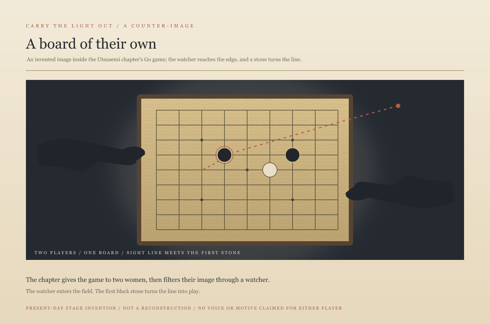

Willowloop · Shadow image and silent score
A Board of Their Own

A red sight line enters a lit Go field, meets the first black stone, and turns along the grid. The two players continue their ordinary placement. The board changes the route of looking without speaking for either player.
The source episode in The Tale of Genji shows Genji watching Utsusemi and Nokiba no Ogi play. This is a present-day invention, not a reconstruction of the historical scene or a claim about either woman's private thoughts.
Four beats
The silent score lets the line cross the wooden lip, pause at the stone, turn down the grid, and withdraw while play continues.